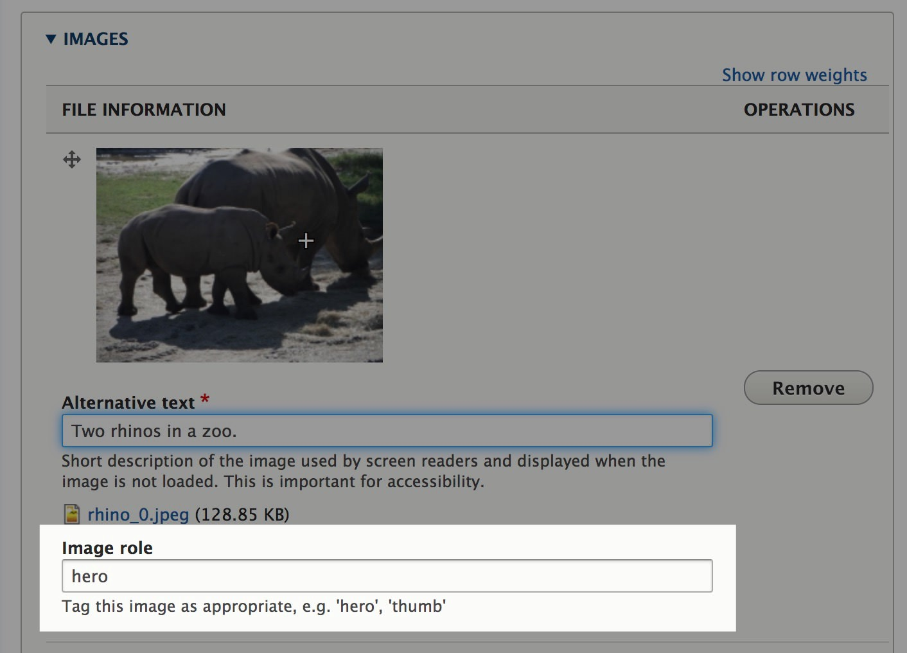
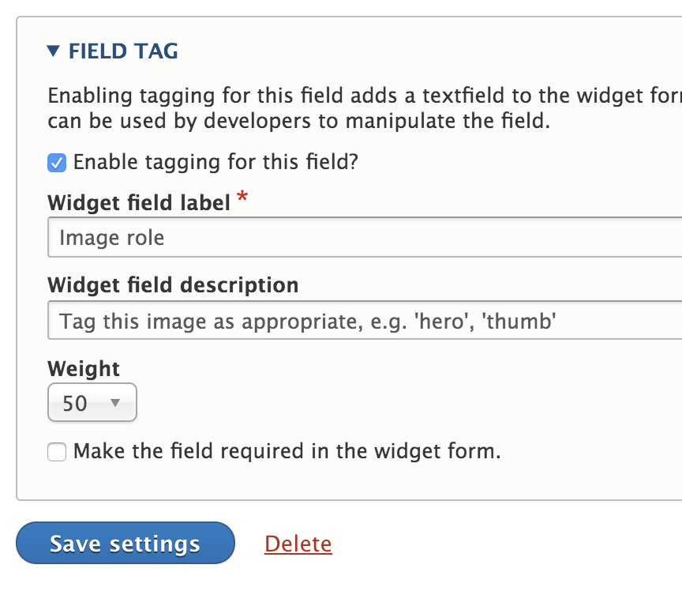

Field Tags Module

Summary
Provides a means to attach a tag-style input box to any entity field, which allows content managers to tag the field content. Developers may take advantage of this additional metadata when manipulating fields.
The use case for which this was written is this. Allow the tagging of images on an multiple value image field to indicate which image is the hero image, which image is the thumb image, and untagged images are just that. It allows the content managers to indicate the role the image is playing for that given entity.
Visit https://aklump.github.io/field_tag for full documentation.
About Tags
- The field tag input box is a CSV string separating one or more tags, e.g.
fooorfoo, bar. - Tags are not case-sensitive.
- Tags may contain spaces.
- Tags must be unique; duplicates will be removed.
Configuration
- Enable this module.
- Visit the Manage fields page for the entity you've picked.
- Click on the Edit button for the given field.
- Enable the Field Tag, and adjust settings as necessary. 
- Give the permission Use field tagging to the correct user roles.
- Visit an entity edit page and make sure you see the tag field as configured.
What Happens When a Field is Deleted
The field tags themselves exist as FieldTag entity instances. When a field which is field tag enabled on an entity type is deleted, all field tags that are associated with that entity type/field are marked with a 1 in the deleted column in the field_tag table. They still exist in the database but are not going to load via the normal field tag API, attach methods, etc. You can still load them using FieldTag::load() if necessary, or access them via the database for reference.
Manage form display
- Node forms will include a list of field tags in the Advanced area, but only if one or more fields have field tags enabled.
- You may control this form element by going to Manage form display for a given node type and changing the weight or disabling this element.
Contributing
If you find this project useful... please consider making a donation.
Contact The Developer
- In the Loft Studios
- Aaron Klump - Web Developer
- sourcecode@intheloftstudios.com
- 360.690.6432
- PO Box 29294 Bellingham, WA 98228-1294
- http://www.intheloftstudios.com
- https://github.com/aklump